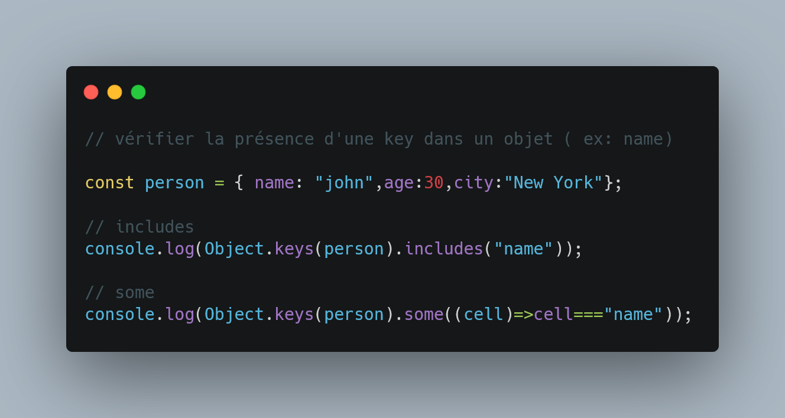
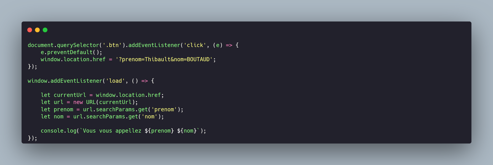
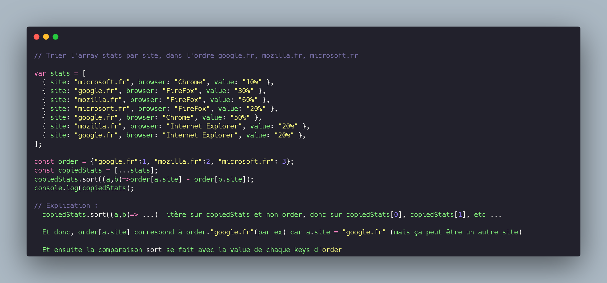

JS Cheat sheet (Qu'est-ce que c'est, à quoi ça sert concrètement, qu'est ce qui le distingue de ? )
Exercices :
Ex : add delete modify
×
let myTab = [
{
nom: `pikachu`,
img: `monImage`,
numero: `#123`,
types: ['fire', 'water'],
},
['jean', 'marcel'],
[{ age: 17, prenom: 'marcel' }],
[[{ race: 'elf', niveau: 137 }]],
];
// 1- ajouter un truc dans chaque
// 2- enlever un truc dans chaque
// 3- modifier un truc dans chaque
//1 ADD
//array of objet
myTab[0].pays="france";
myTab[0] = Object.assign(myTab[0],{pays: "france"});
//array of array
myTab[1].push("didier");
//Array of array of object
myTab[2][0].statu = "roi"; //1-c
myTab[2][0] = Object.assign(myTab[2][0],{status : "roi"}); //1-c2
//Array of array of array of object
myTab[3][0][0].arme="arc"; //1-d
//2 DELETE
// array of objet
delete(myTab[0].pays); //2-a
// array of array
//myTab[1].pop(); //le dernier
myTab[1].splice(1,1); // celui du milieu
//Array of array of object
delete(myTab[2][0].statu); // statu
//Array of array of array of object
delete(myTab[3][0][0].arme);
console.log(myTab);
//3 REPLACE
//Array of object
delete(myTab[0].img);
myTab[0].img2="nouvelleImage";
//Array of array
myTab[1].splice(1,1,"nouveauMarcel");
//Array of array of object
delete(myTab[2][0].statu); // statu
myTab[2][0].statu2 = "nouveau status";
//Array of array of array of object
delete(myTab[3][0][0].arme);
myTab[3][0][0].arme2="nouvel arc";
Echanger l'index de deux objets dans un array
×
// // Echanger l'index de deux objets dans un array
var myArray = [{ music: 'Eminem' }, { music: 'Mozart' }];
[myArray[0], myArray[1]] = [myArray[1], myArray[0]];
console.log(myArray);
// Ou sans destructuring:
var tempo = myArray[0];
myArray[0]= myArray[1];
myArray[1]=tempo;
// Ou avec sort:
myArray.sort((a,b)=>myArray.indexOf(b) - myArray.indexOf(a));
Permuter 2 valeurs dans un array (fonction)
×
Permuter 2 valeurs dans un array (fonction)
const array = [12, -2, 55, 68, 80];
const swapElements = (array, newIndex, oldIndex) => {
const newArray = [...array];
newArray[newIndex] = newArray.splice(oldIndex,1,newArray[newIndex])[0];
console.log(newArray); // [ 12, 68, 55, -2, 80 ]
};
swapElements(array,1,3);
La méthode splice() retourne un tableau contenant les éléments supprimés (dans ce cas, un seul
élément), mais l'élément lui-même est retourné comme un tableau, donc [0] est utilisé pour obtenir
la valeur réelle.
A partir d'un gestionnaire d'evenement, trouvé l'index de l'élément selectionné par rapport
à son parent
×

Passer une list d'arguments à partir d'un tableau
Trouver le nombre le plus grand d'un tableau
Inverser une chaine de charactères
Indentifier si un mot est l'anagramme de l'autre
Supprimer les espaces dans un mot
Trouver température la plus proche de 0 et afficher la temp positives si ex aequo
×
Math.min
procedurale
pf
reduce
sort (mvp)
Code une boucle de ton choix qui affiche tous les nombres pairs entre 1 et 100
×
Code une boucle de ton choix qui affiche tous les nombres pairs entre 1 et 100
Récupérer les x dernières lignes d'un texte.
×
Récupérer les x dernières lignes d'un texte.
Serialiser un groupe d'objet
×
Serialiser un groupe d'objet

Is this string a palindrome ?
×
Is this string a palindrome ?
Dans une chaîne, détecter la plus longue chaîne de caractères composée de caractères
distincts.
Concevoir un algorithme pour trouver tous les caractères communs à deux listes triées.
×
opti (2 parcours en même temps)

non opti (très lourd)
À l’aide de deux threads, écrire “Salut Toto Salut Toto Salut Toto”, sachant que le premier
thread écrit “Salut” et que le deuxième écrit “Toto”.
Poussez tous les “.” d'un tableau donné à la fin du tableau. Par exemple : “a,b,.,c,.,.,k”
devient “a,b,c,k,.,.,.”
×
Poussez tous les “.” d'un tableau donné à la fin du tableau. Par exemple : “a,b,.,c,.,.,k” devient
“a,b,c,k,.,.,.”

string to binary to unary
×
Notice
myVersion
optimized version
Écrire une fonction pour trouver la somme des nombres premiers jusqu'à un certain nombre
donné
×
Écrire une fonction pour trouver la somme des nombres premiers jusqu'à un certain nombre donné
Determiner la parité d'un nombre
×
Determiner la parité d'un nombre

Determiner si un nombre est décimal (avec et sans méthode)
×
Determiner si un nombre est décimal (avec et sans méthode)
Compter le nombre de voyelles dans un string
×
Compter le nombre de voyelles dans un string
Verifier la présence d'une clef dans un objet
×
Verifier la présence d'une clef dans un objet

A partir d'un tableau de nombres, selectionner les 2 nombres les plus proches
(optimisation)
×
A partir d'un tableau de nombres, selectionner les 2 nombres les plus proches (optimisation)
Retourner une valeur (0 par defaut) et ensuite retourner cette valeur incrémenté
Créer un prototype pour un array ou un objet qui console qqch
Créer un prototype pour un array qui rend au carré chaque cellules
Créer jquery en js
Créer jquery en js version class
créer une fonction qui return une nouvelle id par rapport à un object dont les entries
comprennent une id
créer une fonction qui return un array sans les cellules: false, null, 0, "", undefined,
NaN
Créer une fonction qui return un tab qui contient uniquement les valeurs manquantes du 1er
tab
Récupérer le nombre de para d'une fonction passé en para à une autre fonction
Implement a function that transforms a function that takes multiple arguments into a
function that can be repeatedly called with only one argument at a time
ex_call_apply_bind
Implement a function flatten that returns a newly-created array with all sub-array elements
concatenated recursively into a single level.
×

Enlève tous les doublons d'un tableau avec la méthode set
Compare par order alphabetique et renvoie un num localeCompare
Donne le type d'une var typeof
×
typeof
const myVar = "coucou";
console.log(typeof myVar); // string
console.log(typeof 3); // number
convertie en string toString()
Renvoie un bool indiquant si une var est un array Array.isArray()
×
const myArray = [1,2,3];
console.log(Array.isArray(myArray));
ou
Array.isArray([1, 2, 3]); // true
Array.isArray({ toto: 123 }); // false
Array.isArray("tototruc"); // false
Array.isArray(undefined); // false
Donne la valeur primitive valueOf()
Donne la longeur length
renvoie le charactere d'un string à l'index donné charAt(index)
×
Renvoie le char à position de l'index donnée
texte.charAt(2);
Renvoie l'index de la première occurence indexOf(searchValue,startIndex)
×
indexOf(searchValue,startIndex)
Renvoie l'index de la première occurence =>
var texte = "coubole" => console.log(indexOf(b)); //3
Renvoie l'index de la dernière occurence lastIndexOf(searchValue,startIndex)
Concatène 2 tableaux concat()
×
concatène 2 tab
const array3 = array1.concat(array2);
clone un string un nb de fois donné repeat(count)
×
p.repeat(3) // Ne marche qu'avec les strings
Renvoie un objet tableau, contenant une copie superficielle (shallow copy) d'une portion du tableau
d'origine slice(startIndex,endIndex)
×
Renvoie un objet tableau, contenant une copie superficielle (shallow copy) d'une portion du tableau
d'origine, la portion est définie par un indice de début et un indice de fin (exclus).
const animals = ['ant', 'bison', 'camel', 'duck', 'elephant'];
console.log(animals.slice(2));
// Expected output: Array ["camel", "duck", "elephant"]
console.log(animals.slice(2, 4));
// Expected output: Array ["camel", "duck"]
Modifie le contenu d'un tableau en retirant des éléments et/ou en
ajoutant de nouveaux elements et en sauvegardant les valeurs supprimés dans une var splice(startIndex,deleteCount,item1,item2,...)
×
Modifie le contenu d'un tableau en retirant des éléments et/ou en ajoutant de nouveaux
éléments
const months = ['Jan', 'March', 'April', 'June'];
months.splice(1, 0, 'Feb'); // Inserts at index 1
console.log(months); // Expected output: Array ["Jan",
"Feb", "March", "April", "June"]
months.splice(4, 1,
'May'); // Replaces 1 element at index 4
console.log(months); // Expected output: Array ["Jan",
"Feb", "March", "April", "May"]
Transforme en tableau selon un motif split(motif)
×
Créer une list. La division est effectuée en recherchant un motif
var texte = "coucou/hello"; texte.split("/")[1]; //hello
transform une chaine en char en string join()
×
Transforme en chaine de char
const elements = ['Fire', 'Air', 'Water'];
console.log(elements.join());
// Expected output: "Fire,Air,Water"
console.log(elements.join(''));
// Expected output: "FireAirWater"
console.log(elements.join('-'));
// Expected output: "Fire-Air-Water"
Pour un string, il faut transformer le string en list :
var texte="Bonjour, comment ça va ?";
console.log(texte.split("").join("*")); // "b*o*n*j*o*u*r*,* *c*o*m*m*e*n*t* *ç*a* *v*a* *?"
console.log(texte.split(" ").join("*")); // "bonjour,*comment*ça*va*?"
trie dans un tableau sort((a,b))
×
tri croissant et décroissant
Inverse les elements d'un tableau sans tenir compte de leur
valeur reverse
×
tri croissant et décroissant
Permet d'inverser les elements d'un tableau, sans tenir compte de leur valeur
Nettoye les espaces trim()
×
city.trim(" montreal ") // "montreal"
difference entre forEach et map difference entre forEach et map
×
Les 2 méthodes sont itératives, mais forEach ne renvoit rien
const arr = [1,2,3,4,5];
const newArr = arr.forEach((nb)=>nb*2);
console.log(newArr); // undefined
const newArr = arr.map((nb)=>nb*2);
console.log(newArr); // [2,4,6,8,10]
forEach(callback)
map(callback)
Renvoie la valeur du premier element trouvé dans le tableau qui
respecte la condition donnée find(callback)
×
Renvoie la valeur du premier élément trouvé dans le tableau qui respecte la condition
donnée
var texte = ["c","o","u"]; console.log(texte.find((lettre)=>lettre==="u"));
Test si au moins un element du tableau passe une condition et
renvoie un bool some(callback)
×
teste si au moins un élément du tableau passe le test (renvoie un bool)
const nombres = [10, 25, 7, 14, 3]; nombres.some(nombre => nombre % 2 === 0)
Test si tous les elements du tableau passe le test every(callback)
×
teste si tous les éléments du tableau passent le test (renvoie un bool)
Determine si un tableau contiens une valeur et renvoie un
booléen
includes(value)
×
renvoie bool
array1.includes(2) // array1.includes("coucou")
Créer et retourne un nouveau tableau dont les elements valide la
condition filter(callback)
×
La méthode filter() crée et retourne un nouveau tableau
contenant tous les éléments du tableau d'origine qui
remplissent une condition déterminée par la
fonction
const words = ['spray', 'limit', 'elite', 'exuberant', 'destruction', 'present'];
const result = words.filter(word => word.length > 6);
console.log(result);
// Expected output: Array ["exuberant", "destruction", "present"];
const words = ['spray', 'limit', 'elite',
'exuberant','destruction', 'present'];
const result = words.filter(word => word.length >
6);
console.log(result); // Expected output: Array
["exuberant","destruction", "present"]
applique une fonction qui est un « accumulateur » et qui traite
chaque valeur d'une liste (de la gauche vers la droite) afin de la réduire à une seule valeur.
Reduce(callback) ...
×
console.log([1, 2, 3].reduce((a, val) => a + val)) //Explication : 1 + 2 + 3 = 6
//Reduce()
//Reduce()
const array1 = [1, 2, 3, 4, 5];
const initialValue = 0;
// const result = array1.reduce((accumulator, currentVal) => accumulator + currentVal,initialValue);
const result = array1.reduce((accumulator, currentVal) => {
return accumulator + currentVal;
}, initialValue);
console.log(result);
//Au début de la première itération, accumulator est égal à initialValue (0)
//et currentVal est égal à la première valeur du tableau (1).
//Cette fonction prend les deux valeurs et retourne leur somme.
Strings :
inverse
`Qui suis-${je}` template
literals
Convertie un char en int + en float parseInt
×
convert char to nb integer
Remplace un element par un autre dans un string replace()
×
city.replace("e", "é") // "montréal"
Transforme en minuscule toLowerCase()
Transforme en majuscule toUpperCase()
Convertie un string en operation eval(1+2)
×
var addition = "1+2"; eval(addition) // eval(1+2);
Renvoie un booléen indiquant si la chaine de caractères commence
par la deuxième chainestartsWith(searchString, position)
×
renvoie un booléen indiquant si la chaine de caractères commence par la deuxième chaine
Renvoie une chaine de charactère à partir de points
utf-16 String.fromCharCode(chiffre)
×
transforme un chiffre en char
inverse
Arrays :
crud Array CRUD array
×
const myArray = ["un","deux","trois"];
Create:
myArray.unshift("zéro"); // ajout gauche
myArray.push("quatre"); // ajout droite
Read:
console.log(myArray[0]) // "un"
Update:
myArray.splice(2,1,"valeur modifié"); // ["un", "deux", "valeur modifié"]
myArray.splice(0,1,1); // [1, "deux", "trois"]
Delete:
myArray.shift(); // enleve à gauche
myArray.pop(); // enleve à droite
myArray.splice(1,1); // ["un", "trois"]
Vielle déclaration tableau Vielle
déclaration tableau
×
let monTab = new Array("un","deux");
let myList = ["apples","oranges"];
tableau 2d tableau 2d
×
let monTab [["chips","burgers"],["radis","tomates"]];console.log(monTab[0][1]) // burgers
console.log(monTab[0][1]) // burgers
effectue une copie superficielle d'une partie d'un tableau
sur ce même tableau et le renvoie sans modifier la taille copyWithin(target,
start, end)
×
effectue une copie superficielle (shallow copy) d'une partie d'un tableau sur ce même tableau
Copy to index 0 the element at index 3
const array1 = ['a', 'b', 'c', 'd', 'e'];
console.log(array1.copyWithin(0, 3, 4));
// Expected output: Array ["d", "b", "c", "d",
"e"]
Determine si un tableau contiens la valeur recherchée et renvoie
bool includes
×
includes

Créer un nouveau tableau contenant tous les éléments des sous
tableaux flat()
Renvoie l'index de la première occurence du tableau qui remplit
la condition findIndex(callback)
×
Renvoie l'index du premier élément du tableau qui
satisfait une condition donnée par une fonction. Si la
fonction renvoie faux pour tous les éléments du tableau,
le résultat vaut -1.
const array1 = [5, 12, 8, 130, 44];
const isLargeNumber = (element) => element > 13;
console.log(array1.findIndex(isLargeNumber));
// Expected output: 3
Créer une nouvelle instance en array d'un object Array.from(monObject)
×
crééer une nouvelle instance en array d'un object
boucle sur une fonction donnée pour chaque element du tableau
avec une condition forEach(callback)
×
La méthode forEach() permet d'exécuter une fonction donnée
sur chaque élément du tableau.
const array1 = ['a', 'b', 'c'];
array1.forEach(element => console.log(element));
boucle sur une fonction donnée pour
chaque element du tableau avec une condition et retourne le resultat map(callback)
×
Utiliser index dans map(pour pouvoir selectionner quelle tache
supprimer)
const map1 = array1.map(x => x * 2);
créer une boucle qui itère sur les values d'un array for of
×
for of() const array1 = ['a', 'b', 'c'];
for (const element of array1) { console.log(element);
}
Ajoute à la fin d'un tableau un objet Array.prototype.push(Objet.prototype)
×
monTableau.push({nom:"botwald"});
push dans un tableau de tableau sans créer de nouveau
tableau push sans créer de nouveau tableau
×
monTableau[0].push("chips");
Objects :
inverse
CRUD objet CRUD object
×
const myData = {
green : {nom: "data verte", description: "de l'herbe"},
red : {nom: "data rouge", description : "du feu"}
};
Create:
myData.orange = {nom: "marron", description : "earth"};
Read:
console.log(myData.green.nom);
Update:
myData.green.nom="data emeraude";
myData.green = "nouvelle value";
// changer la key "green"
delete myData.green;
myData.nouvelleClef = {nom: "data verte", description: "de l'herbe"};
Delete
delete myData.green.nom;
delete myData.green;
console.log(myData);
objet qui ne peut contenir que des valeurs uniques avec ses
propres
méthodes set
×
set
methodes de new Set()

iteration sur un object Objet.keys(arr).forEach(callback)
×
iteration sur un object
map pour les objets map sur les
objets
×
const obj = {
a:"Pierre",
b:"Périne",
c:"Marius"
};
console.log(Object.keys(obj).map((item)=>`${item} : ${obj[item]}`));
Object.entries(obj).map((item)=>console.log(item)); // ["a","Pierre"], ["b",...
Object.keys(obj).map((item)=>console.log(item)); // a, b, c
Object.values(obj).map((item)=>console.log(item)); // "Pierre", "Périne", "Marius"
Object of arrays of objects Object of
arrays of objets
×
const films = {
sf:[
{nom:"jurassic park",director:"steven spielberg",year:1999},
{nom:"coucou",director:"mr coco",year:2924}
],
fantastique:[
{nom:"le seigneur des anneaux",director:"Peter jackson",year:2001}
]
};
//console.log(films.sf[0].year);
/*
films.sf.forEach((film)=>{
console.log(film.nom);
})
*/
Object.keys(films).forEach((key)=>{
films[key].forEach((value)=>console.log(value.nom));
})
filter dans un object... filter dans un
object...
×
const myData = {
data1 : {nom: "php", description : "blablabla php"},
data2 : {nom: "js", description : "blablabal js" }
};
const res = Object.values(myData).map((item)=>item.nom);
console.log(res); // php, js
Permet de créer une nouvelle instance d'array Array.from()
×
permet de créer une nouvelle instance d'Array
//Pour un arrayLikeObject
const arrayLikeObject = { 0: 'a', 1: 'b', 2: 'c', length: 3 };
Array.from(arrayLikeObject).map((value)=>{
console.log(value);
})
//Pour un string
const monString = "azeraherioehrer";
Array.from(monString).forEach((lettre)=>{
console.log(lettre);
})
Objet qui n'est pas une class ou qui n'a pas de constructor, et
qui peut utiliser une methode avec son propre contexte Objet littéral
Méthode statique qui créer un nouvel objet, utilisant un objet
existant comme prototype du nouvel objet créé Object.create()
×
Créer une copie d'un objet
const object1 = {
val:1,
func : function(){
return this.val;
}
}
const object2 = Object.create(object1);
object2.val=2;
console.log("object1 : " + object1.val); //1
console.log("object2 : " + object2.val) //2
Fonctionne aussi avec mais on n'hérite pas des méthodes(du contexte)
let newBook = JSON.parse(JSON.stringify(book));
newBook.name="le seigneur des anneaux";
console.log(book.name);
console.log(book.func()) // 1
console.log(newBook.func()) // undefined
renvoie la valeur primitive d'un objet donné. Object.valueOf()
Renvoie une chaine de char représentant l'objet Object.toString()
concatène 2 obj en remplaçant les conflits par le 2ème obj en
paramètre assign()
×
concatène 2 tab en replaçant les conflits par le 2ème tab en paramètre
const target ={a:1, b:2};
const source = {b:4,c:5};
const result = Object.assign(target,source);
console.log(target); //"a": 1,"b": 4,"c": 5
méthode d'objet qui créer un objet de manière plus
détaillé defineProperty()
×
const book = {
name:"harry potter"
};
Object.defineProperty(book, "author",{
value:"Jk rolling",
writable:true,
enumerable: true // Définir la propriété comme énumérable
});
// Plus pratique, mais moins précis:
book.author="Jk rolling";
console.log(book);
Maths :
inverse
Convertie un nombre en valeur absolue Math.abs
calcul un nombre par rapport à une puissance Math.pow()
×
20 au carré(20*20) => Math.pow(20,2);
methode pour calculer le PI Math.PI
×
aire = Math.PI*rayon*rayon
Arrondir à 2 après la virgule nb.toFixed(nb)
×
let nb=3.434 => nb.toFixed(2) => 3.43
Arrondi à l'entier le plus haut Math.ceil()
×
Arrondi le nombre à l'entier le plus haut
Arrondi le nb à l'entier le plus bas Math.floor()
×
Arrondi le nombre à l'entier le plus bas
Arrondi le nombre à l'entier le plus proche Math.round()
×
Arrondi le nombre à l'entier le plus proche
Méthode pour obtenir le nombre le plus grand ou le plus petit
d'une liste Math.max()/min()
×
On lui passe une liste de nombres (pas un tab)
console.log(Math.max(1, 2, 3, 4, 5));
Ou avec un tableau :
const arr = [1, 2, 3, 4, 5];
console.log(Math.max.apply(null, arr));
créer un nombre aléatoire Math.random()*(10)+10
×
Nombre entre 10 et 20
Math.random() * (nb d'unité qui dépasse la base) + seuil
console.log(Math.round(Math.random()*(10)+10));
Date :
inverse
Date en ms new Date().getTime()
obtenir les heures new
Date().getHours()
Jour de la semaine( dimanche = 0, lundi = 1 etc..) new Date().getDay()
N° du mois (ex: 23) new
Date().getDate()
Obtenir l'année new
Date().getFullYear()
×
new Date().getFullYear()
créer une nouvelle date à partir de date/mois/année new Date(year,month-1,date)
×
new Date(year,month-1,date)
créer une date dans 24h new
Date().getTime()+3600*24
×
new Date(year,month-1,date)
webpack :
starter + modules es6 et common js
×
starter + modules es6 et common js
dotEnv pour front av webpack
×
dotEnv pour front av webpack
Asynchrone :
debounce
×
debounce

Utilisation de callback
×
Utilisation de callback
Syntaxe callback:
var new Promise
return new Promise
Promise.all (func)
Promise.all (var)
requête
×
.then()
const adresse = 'https://www.randomuser.me/api';
fetch(adresse)
.then((res) => {
return res.json();
})
.then((res) => {
return res.results[0];
})
.then((res) => {
console.log(res.gender);
})
.catch((err) => {
console.log(err);
});
Syntaxe async await
Raccourcie Promise + setTimeout
×
Raccourcie promise + setTimeout
await new Promise
var new Promise
return new Promise
Promise.all
requête
×
Async await
const adresse = 'https://www.randomuser.me/api';
const getResults = async (url) => {
try{
const preRes = await fetch(url)
const res = await preRes.json();
console.log(res.results[0].gender);
}catch(err){
console.log(err);
};
};
getResults(adresse);
Requête fetch models
POST fetch
×
const getAddress = async(url)=>{
try{
const result = await fetch(url,{
method: "POST",
headers:{
"Accept":"application/json",
"Content-type":"application/json",
"Authorization": `Bearer ${token}`,
},body:JSON.stringify({
title:e.target.form.title.value
}),
});
}catch(err){
console.log(err);
}
}
getAddress("https://localhost:3000/api/stuff");
POST files
Autres
setInterval/clearInterval et setTimeout/clearTimeout
setInterval/clearInterval forme raccourcie
tricks&tips
scroll modal
formData
formData avec contact form (priorité)
×
formData avec contact form (priorité)

Holly Grall
×
Hooly Grall

preview image
selecteurs
×
Selecteurs
id : une seul selecteur
name: envoie de data via url (php, radio, url, etc...)
Name
HTML:
<input type="file" name="myImg" />
CSS:
input[name="myImg"]{
display:none;
}
JS:
document.querySelector("input[name='myImg']");
Label
label utilise uniquement l'id d'un selecteur:
<input type="file" id="monImg" />
<label for="monImg" />
Cacher l'input
POO :
Architectures POO SOLID:
Architectures POO SOLID
×
Architectures POO SOLID
Les principes de la POO:
Classe
Encapsulation
×
Encapsulation
L'encapsulation permet de contrôler l'accès aux données et de protéger l'intégrité de ces données en
définissant des niveaux d'accès.
Héritage
×
Héritage
Si on veux ajouter une nouvelle méthode, il faut mettre à jour l'interface, ou utiliser un extends
Polymorphisme
Abstraction
×
Abstraction
C'est une interface, une classe abstraite
Ok donc l'interface est là pour donner une idée générale au développeur de ce à quoi sert la classe
dérivé ?
Composition
Les principes SOLID:
Single Responsability Principle
×
Single Responsability Principle
Responsable d'une seule partie du code
Open/Closed principle
×
Open/Closed principle
Une classe doit être ouverte à l'extention, mais fermé à la modification (héritage ou composition)
Liskov Substitution Principle
×
Liskov Substitution Principle
Une classe hérité ne peut pas hérité d'une méthode ou d'un objet qu'elle ne peut pas utiliser
Donc on doit créer des classes intermédiaire pour séparer les classes trop différentes
les objets d'une classe dérivée doivent pouvoir être remplacés par des objets de la classe de base
sans altérer le bon fonctionnement du programme.
En d'autres termes, si une classe B est une sous-classe de A, alors les instances de B doivent
pouvoir être utilisées partout où des instances de A sont attendues, sans que le programme ne
rencontre de comportement incorrect.
Interface Segregation Principle
×
Interface Segregation Principle
Créer des interfaces spécifiques aux besoin plutôt qu'une interface générale et longue
Dependency Inversion Principle
×
Dependency Inversion Principle
Les modules de haut niveau ne doivent pas dépendre des modules de bas niveau. Tous deux doivent
dépendre d'abstractions.
Les abstractions ne doivent pas dépendre des détails. Les détails doivent dépendre des abstractions.
Abstraction: En programmation, une abstraction est typiquement une interface ou une classe abstraite
qui déclare des méthodes sans les implémenter.
Détails: Les détails sont les implémentations concrètes des abstractions.
Les paramètres message et recipient, c'est mieux de les mettre dans la méthode que dans le
constructor
haut niveau : composant ou classe qui gère la logique affaire/métier (les classes normales)
bas niveau : composant ou classe qui fournissent des services utilitaires (BDD, API, etc...)
Abstraction : classe abstraite qui définissent les contrats que les implémentations doivent
respecter. (interfaces)

Exemples d'utilisation de la POO:
Router
events dans la classe
×
exemple poo grosse classe
Config interface + héritage petit enfant
×
How to create an interface (abstract class)
Modal
Interface/service/component pour renderer
×
Interface renderer
Service renderer
component renderer
Ajout d'une class supérieur abstraite pour les méthodes
×
Ajout d'une class supérieur abstraite pour les méthodes
Fonctions :
Fonctions classiques
Fonction globale
Fonction non déclaré
×

Fonction auto déclaré (IIFE)
Object littéral (qui possède une méthode d'objet)
×

Object littéral focus methode
Besoin que this change selon l'objet appelant.
Rebind une fonction
Arguments (fonction variadique)
Hoisting
function constructor + prototype + heritage + prototype.constructor :
héritage et prototype (nouvelle version)
(une fonction fleché ne peut pas utiliser new)
Fonctions flechés
Simplification (sans return pour expression courte)
×

Eviter les erreurs liés à this au changement de contexte
Pas de liaison (binding) nécessaire dans une class
Difference entre this fonctions normals et this fonction flechés
Diff this addEventListener
Recréer une fonction constructor avec une fonction fleché
Recréer une fonction constructor avec une fonction fleché 2
POO (les grands groupes)
Object littéral
fonction factory (pas d'héritage)
function constructor + prototype + heritage + prototype.constructor :
Classe
PF
Composition avec fonction
Composition avec fonction-variable
Currying
closures appel
closures Addition
closures Incrémentation
This en details
ex_call_apply_bind
apply()
×
La méthode apply() appelle une fonction en lui passant une valeur this et des arguments sous forme
d'un tableau (ou d'un objet semblable à un tableau).
Math.max ne fonctionne pas directement avec un tableau. C'est là que la méthode apply entre en jeu.
En utilisant apply, nous pouvons appliquer Math.max au tableau numbers
const numbers = [5, 10, 8, 3, 2];
const maxNumber = Math.max.apply(null,numbers);
console.log(maxNumber); // Affiche 10
Function.prototype.bind(thisArg, arg1, arg2)
definition
×
definition
Avec la méthode bind(), un objet peut emprunter une méthode d'un autre objet.
La méthode bind() crée une nouvelle fonction qui, lorsqu'elle est appelée, appelle cette fonction
avec son mot-clé this défini sur la valeur fournie, ainsi qu'une séquence donnée d'arguments
précédant tout argument fourni lors de l'appel de la nouvelle fonction.
Fixer contexte(this) d'une fonction/methode
×
fixer contexte(this) d'une fonction/methode
Fixer des paramètres
Utilisation avec des événements
×
Utilisation avec des événements
Utilisation avec des méthodes d'objet
×
Utilisation avec des méthodes d'objet
Utilisation de bind dans la programmation fonctionnelle
×
'utilisation de bind dans la programmation fonctionnelle

getter & setter
High order function
def
autre ex
BOM
storage : ...
×
//localStorage & sessionStorage
sessionStorage[clé], [valeur];
//CREER
sessionStorage.setItem("clé","valeur");
//GET
sessionStorage.getItem("clé");
//ENLEVER
sessionStorage.removeItem("clé");
//TOUT EFFACER
sessionStorage.clear();
//TRANSFORMER EN STRING POUR LE STORAGE
sessionStorage.setItem("clé",JSON.stringify("valeur"));
//TRANSFORMER EN OBJECT POUR LE JS
JSON.parse(sessionStorage.getItem("clé"));
window.open()
window.close()
geolocation
×
navigator.geolocation.getCurrentPosition((position) => {
let lat = position.coords.latitude;
let long = position.coords.longitude;
latText.innerText = lat.toFixed(2);
longText.innerText = long.toFixed(2);
});
navigator
×
//navigator
// permet de connaitre la langue donc d'adapter des fonction de date dans la bonne lg
navigator.cookieEnabled; // true
navigator.platform; // win32
navigator.language; // fr
navigator
×
//history
// permet de rediriger vers la page d'avant ou d'après(ne marche pas av navigation privé);
history.back(); // page précédente
history.forward(); // page suivante
location
×
location.reload(); // recharger une page
location.href(); // redirection
Récupérer paramètres url
×
Récupérer id dans l'url
./product.html?id=${value[i]._id}`
var str = window.location.href;
var url = new URL(str);
var id = url.searchParams.get("id");
console.log(str);
Récupérer plusieurs paramètres dans l'url

Récupérer path name
DOM :
Supprimer un element du dom (autre que element.innerHTML = ?)
Utiliser les classNames pour modifier dynamiquement le css
×
Utiliser les classNames pour modifier dynamiquement le css
getAttribute()
×
let attribut = element.getAttribute(nom_attribut);// donne la value de l'attribut
Selection individuel
×
document.getElementById("monId");
document.querySelector(".maClasse")/(#monId);
Selection multiple
×
document.getElementsByTagName("p");
document.getElementsByClassName("hightlight");
document.querySelectorAll(".hightlight");
<p>coucou 1</p>
<p>coucou 2</p>
<p>coucou 3</p>
Array.from(paras).forEach((para)=>console.log(para.textContent));
Node et element => enfant du noeud - parent du noeud - fères avant et après du noeud -
parent le plus proche - element parent - nb d'element enfant - premier et dernier element enfant - selection
d'un element enfant - retirer un element enfant
×
elem.childNodes[?] //enfants du noeud
elem.parentNode.parentNode // pas de []
elem.nextSibling.nextSibling // ou previousSibling; //
Utiliser .map genre Array.from(elements).map((element){})
let caddie_ancestor = caddie.closest('.article_container') // le plus proche parent du nom du selecteur, permet d'éviter de faire element.parentElement.parentElement...
elem.parentElement
elem.childElementCount // retourn nb elemts enfants
elem.firstElementChild elem.lastElementChild
elem.children[0] , elem.children[1]
Change style
×
element.style.color="red";
Ajouter noeud dom
add id
×
newPara.id="nouvelleId";
add class
×
newPara.className="nouvelle classe"
Gerer les attribute
×
//LIRE LE NOM D'UN ATTRIBUT
let attribut = element.getAttribute(nom_attribut)
//CREER UN ATTRIBUT OU LE MODIFIER S'IL EXISTE DEJA
setAttribut("alt","coucou")// ("class","value")
document.querySelector('h1').setAttribute('style', 'text-transform: lowercase');
//SUPPRIMER UN ATTRIBUT
removeAttribute()
modification classes
×
element.classList.add("_");
element.remove("_")
element.contains("_")
Il n'y a pas de méthode pour modifier ou remplacer, donc on supprime et on crééer
element.classList.remove("nomDeLaClasse");
element.classList.add("nouveauNomDeClasse")
ex: créer puis supprimer une class:
document.querySelector("#h1").classList.add("monId");
document.querySelector("#h1").classList.remove("monId");
Afficher value Node(pas appendChild)
Afficher le texte
Afficher le html
Mettre du text/html dans une balise
×
document.querySelector("#div1").innerHTML="coucou"
Instructions :
try{}catch(err){console.log(err)}
×
affiche l'erreur s'il y a
break
×
arrête => for(let i=0;i<5;i++){if(i===3){break;};console.log(i)} // 0 1 2
continue
×
passe à la prochaine instruction
for(let i=0;i<5;i++){if(i===3){continue;};console.log(i)} // 0 1 2 4
if(){}else if(){}else{}
for(var i=0;i
while(){}
do/while
do{}
switch
×
plusieurs case sont possible (case 1: case2: //instruction //break;)
for/in
×
loops through the properties of an object
for/of
×
loops through the values of an iterable object
operateur typeof()
opérateur conditionnel
×
var isActive = true;
var className = isActive ? 'red' : 'green';
var element = document.querySelector(".root");
element.classList.add(className);
opérateur conditionnel
×
(ternaire react) // div class={isToggle ? "red" : "green"}
Evenements :
Gestionnaire d'évenement avec fonction
×
gestionnaire d'évenement avec fonction
catch event n'importe où
×
document.addEventListener
Evenements multiples
Sans gestionnaire d'evenement
×
Sans gestionnaire d'evenements
callBack
Ascenseur
Propagation d'évenement
×
Propagation d'évenement
click/load,mouseover/out/submit,keydown,keyup,scrool,resize,input,select,contextmenu,focus,blur,change
Scope :
hoisting
functionnal scope
×
functionnal scope

block scope
×
block scope

Variables: const let var
×
const let var
Avant 2015: only var
Economie de ressources
const > let > var
global
var : oui
let : non
const : non
var testGlobal_Var = 17;
let testGlobal_Vest = 18;
console.log(window.testGlobal_Var); // 17
console.log(window.testGlobal_Let); // undefined
Se limite à la portée d'une fonction
var : oui
let : oui
const : oui
Se limite à la porté d'un block ( instruction{...} ou if(){...})
var : non
let : oui
const : oui
Peut être réassigné(modifier valeur)
var : oui
let : oui
const : non (sauf pour objet)
Peut être redéclarer
var : oui
let : non
const : non
VSC :
lancer node nomFichier.js automatiquement : ctrl + f5
developper un terminal : ctrl + shift + ù
commentaire selection on/off : ctrl + k + c / ctrl + k + u
Syntaxe :
null et undefined
case sensitive
×
Si une variable ou fonction ou autre est déclaré avec une maj, alors une minuscule ne fonctionnera
pas
Gestion des erreurs
Destructuring
×
Destructuring

Rest operator
×
Rest operator

Spread operator
×
Spread Operator

Spread operator et passage d'argument à une fonction
×
Spread operator et passage d'argument à une fonction
Spread operator av ajout entries
×
Spread operator av ajout propriété
const personne = {prenom : "thibault", age: 34, ville: "poitiers"};
const newPersonne = {...personne, niveau:"grand maître"};
console.log(newPersonne);
styliser un console.log : console.log('%c coucou je suis là !' , 'color:red;font-size:50px;')
Programmation fonctionnelle
Méthodes : map filter reduce,concat,some,every,find,findIndex,sort
fonctions pures : une fonction fait une chose et une seule, elle prend des para et retourne qqch, PAS DEFFETS
DE BORDS
immutabilité : copie des tab/objets pour eviter effets secondaires
Currying
copie_Slice
Compréhension de la PF
paradigme fonctionnelle
×
paradigme fonctionnelle
Moins répandue, mais tout de même considérée comme un paradigme majeur, la programmation
fonctionnelle s’inspire des fonctions mathématiques.
Ce paradigme est beaucoup plus abstrait. L’entité centrale est la fonction, au sens mathématique du
terme, donc définie par une expression donnée telle que :
f(x, y) = x + y
f(x)= 2x
Fonctions pures
×
Def fonctions pures
Une fonction fait une chose et une seule.
pas d'effets secondaires (ne modifient pas l'état global du programme).
Effets secondaires:
- console.log
- accès à un bdd
- appel réseau
- appel à une fonction qui produit un side-effect
Ex: fonction pures et impures
Ex: fonction pure pour manipuler DOM
Immutabilité
×
Immutabilité
On peut passer une var global en para, mais il faut en faire une copie avant de la manipuler
Les données sont immuables, ce qui signifie qu'elles ne peuvent pas être modifiées une fois qu'elles
sont créées.
Au lieu de cela, toute modification crée une nouvelle instance des données.
Cela rend le comportement du code plus prévisible, car une fois qu'une donnée est créée, elle reste
inchangée.
Cela facilite la compréhension, les tests, le parallelisme du code par les développeurs et réduit
les effets secondaires inattendus.
Référencialité transparente: Cela signifie que l'évaluation d'une expression peut être remplacée par
sa valeur sans changer le comportement du programme.
Cela est possible grâce à l'absence d'effets secondaires dans les fonctions pures.
Traitemnet de données en temps que flux: La manipulation des données est souvent effectuée en
utilisant des opérations
sur des flux de données plutôt qu'en modifiant directement des structures de données.
Cela encourage un style de programmation plus déclaratif et fonctionnel
Paralellisme simplifié: L'absence de données partages et de changement d'état facilite la concurrence
lorsque plusieurs threads tentent de modifier un objet en même temps
slice pour array

Object.assign pour object
spread operator pour les deux
exemple Un tableau d'objets
Composition
×
Composition de fonctions (abstraction)
Les fonctions peuvent être combinées pour créer des fonctionnalités plus complexes.
Cela favorise la réutilisabilité du code et permet de construire des programmes en combinant des
petites unités fonctionnelles.
First class functions:
- Peuvent être affecté dans une variable
- Peuvent être utilisés comme paramètre dans une fonction
- Peuvent être utilisés comme résultat d'une fonction
Hight order functions:
- Peuvent prendre une fonction comme paramètre
- Peuvent retourner une fonction comme résultat
Composition base

Fonction en paramètre
fonction dans une var
function as result
Partial application
Currying
Récursivité:
×
Principe:
La récursion permet de résoudre de façon déclarative (par l'utilisation d'une fonction qui s'appelle
elle-même)
des problèmes que l'itération permet de résoudre de façon impérative (modification d'état à chaque
boucle).
Vu que la programmation fonctionnelle prône du déclarative, elle utilise la récursion à la place de
l'itération dans la résolution des problèmes.
sort
arr.sort(fonctionComparaison);
sort forme classique
sort forme raccourcie
sort avec tableau
sort un array
×
var stats = [
{ site: "microsoft.fr", browser: "FireFox", value: "20%" },
{ site: "google.fr", browser: "FireFox", value: "30%" },
{ site: "google.fr", browser: "Chrome", value: "50%" },
{ site: "mozilla.fr", browser: "FireFox", value: "60%" },
{ site: "mozilla.fr", browser: "Internet Explorer", value: "20%" },
{ site: "microsoft.fr", browser: "Chrome", value: "10%" },
{ site: "google.fr", browser: "Internet Explorer", value: "20%" },
];
version optimisée

version non optimisée
filter
filter(predicat,index,arr)
Filter dans un array ...
×
const myData = [
{nom: "php", description : "blablabla php"},
{nom: "js", description : "blablabal js" }
];
let result = myData.filter((lg)=>lg.nom==="php");
console.log(result);
console.log(result[0].nom)
Filter dans un object ...
×
const myData = {
data1 : {nom: "php", description : "blablabla php"},
data2 : {nom: "js", description : "blablabal js" }
};
let result2 = Object.values(myData).filter((item)=>item.nom==="php");
console.log(result2);
console.log(result[0].nom)
filter_index
filter_doublon
×
filter_doublon

filter_includes
filter_typeof
map
Array.prototype.map(valeurCourante, index, array)
map changer keys en values
×
map changer keys en values
var data = {
"google.fr": [
{ name: "Chrome", value: "50%" },
{ name: "FireFox", value: "30%" },
{ name: "Internet Explorer", value: "20%" },
],
"mozilla.fr": [
{ name: "Chrome", value: "20%" },
{ name: "FireFox", value: "60%" },
{ name: "Internet Explorer", value: "20%" },
],
"microsoft.fr": [
{ name: "Chrome", value: "10%" },
{ name: "FireFox", value: "20%" },
{ name: "Internet Explorer", value: "70%" },
],
};
map_double
map_length
map_ternaire
×
map_ternaire
.png)
map_filter
map_concatenation
map_formatage
map_tronquer_mot
map_fonction_externe
map_transformer_en_pourcentage
×
map_transformer_en_pourcentage
map_ajout_propriété_objet
×
map_ajout_propriété_objet 2
reduce
Array.prototype.reduce(accumulator, currentValue, index, array) + valeurInitiale
Reduce base
×
reduce reconstruire un array à partir d'une dépendence array
reduce reconstruire un array à partir d'une dépendence int
reduce construire un object à partir d'une dépendence object et d'un tableau
const data = {
coucou: [1, 2, 3, 4, 5],
};
reduce exercice sur object
reduce : Opérer une somme sur un tableau
×
reduce : Opérer une somme sur un tableau
const sommeArray1 = array1.reduce((accumulator,currentValue)=>{
return accumulator + currentValue;
},0);
console.log(sommeArray1);
Reduce : Produit des elements d'une liste (1*2*3*4*5) ...
×
Reduce : Produit des elements d'une liste (1*2*3*4*5)
const produitArray1 = array1.reduce((acc,currentV)=>{
return acc*currentV;
},1);
console.log(produitArray1);
Reduce : Chercher/remplacer avec plusieurs motifs ...
×
Chercher/remplacer avec plusieurs motifs
var input = "I'm %USER% and I live in %COUNTRY%";
var data = [
{ token: "%USER%", value: "lionel" },
{ token: "%COUNTRY%", value: "France" },
];
var output = data.reduce((acc,curV)=>{
return acc.replace(curV.token, curV.value);
},input);
console.log(output);
Reduce : Réaliser un groupBy ...
×
Réaliser un groupBy
Mettre les mêmes sites dans un tableau
var stats = [
{ site: "google.fr", browser: "Chrome", value: "50%" },
{ site: "google.fr", browser: "FireFox", value: "30%" },
{ site: "google.fr", browser: "Internet Explorer", value: "20%" },
{ site: "mozilla.fr", browser: "FireFox", value: "60%" },
{ site: "mozilla.fr", browser: "Internet Explorer", value: "20%" },
{ site: "microsoft.fr", browser: "Chrome", value: "10%" },
{ site: "microsoft.fr", browser: "FireFox", value: "20%" },
];
var newObject = stats.reduce((accumulator, currentValue)=>{
var site = currentValue.site;
if(!accumulator[site]){
accumulator[site]=[];
}
accumulator[site].push(currentValue);
return accumulator;
},{});
console.log(newObject);
var newArray1 = Object.values(newObject);
console.log(newArray1);
Reduce : Manipuler la structure des données ...
×
Manipuler la structure des données
//changer la structure de l'objet pour grouper ces résultats par type de navigateur plutôt que par site
var data = {
"google.fr": [
{ name: "Chrome", value: "50%" },
{ name: "FireFox", value: "30%" },
{ name: "Internet Explorer", value: "20%" },
],
"mozilla.fr": [
{ name: "Chrome", value: "20%" },
{ name: "FireFox", value: "60%" },
{ name: "Internet Explorer", value: "20%" },
],
"microsoft.fr": [
{ name: "Chrome", value: "10%" },
{ name: "FireFox", value: "20%" },
{ name: "Internet Explorer", value: "70%" },
],
};
Reduce : Manipuler la structure des données 2
×
Manipuler la structure des données 2
const films = {
"sf":[
{name:"jurassik park", year: 1993},
{name:"bbb", year: 1923},
{name:"ccc", year: 1993},
{name:"ddd", year: 2017},
],
"aventure":[
{name:"eee", year: 1958},
{name:"fff", year: 1999},
]
}
Reduce : Valeur maximale d'une liste ...
×
Valeur maximale d'une liste :
var valMaxArray1 = array1.reduce((acc,currentV)=>{
return Math.max(acc,currentV);
},-Infinity);
console.log(valMaxArray1);
Reduce : Compter le nombre d'occurrences d'un élément(nombre de x qu'on trouve le même
nombre) ...
×
Compter le nombre d'occurrences d'un élément(nombre de x qu'on trouve le même nombre)
var elementToCount = 2;
var occurenceArray1 = array1.reduce((acc,currentV)=>{
if(currentV===elementToCount){
acc++;
}
return acc;
},0);
console.log(occurenceArray1);
Récursivité
Récursivité : Calcul de la factorielle ...
×
Récursivité : Calcul de la factorielle
var nombre = prompt("Saisir un nombre pour en obtenir la factoriel");
const factoNb = (nb) => {
if(nb inférieur ou = à 1){
return 1;
}else{
return nb*factoNb(nb-1);
}
};
const result = factoNb(nombre);
console.log(result);
Récursivité : Récupérer données profondes d'un tableau ...
×
Récursivité : Récupérer données profondes d'un tableau
//écrivez une fonction qui permet de récupérer tous les noms de chat dans un tableau.
const data = [
{
type: 'folder',
name: 'cats',
children: [
{
type: 'image',
name: 'Buffy',
},
{
type: 'image',
name: 'Gizmo',
},
{
type: 'folder',
name: 'small-cat',
children: [
{
type: 'image',
name: 'Fluffy',
},
{
type: 'image',
name: 'Harry',
},
{
type: 'folder',
name: 'black-cat',
children: [
{
type: 'image',
name: 'Daisy',
},
{
type: 'image',
name: 'Toby',
},
],
},
{
type: 'folder',
name: 'white-cat',
children: [
{
type: 'image',
name: 'Minnie',
},
{
type: 'image',
name: 'Lucy',
},
],
},
],
},
{
type: 'folder',
name: 'future-cat',
children: [],
},
],
},
];
console.log(data);

Exercices supplémentaire
changer string en upperCase()
Afficher un li pour chaque fruits
Double iteration
×
find pour 1 ressource, filter pour plusieurs

Concatenation DOM
×